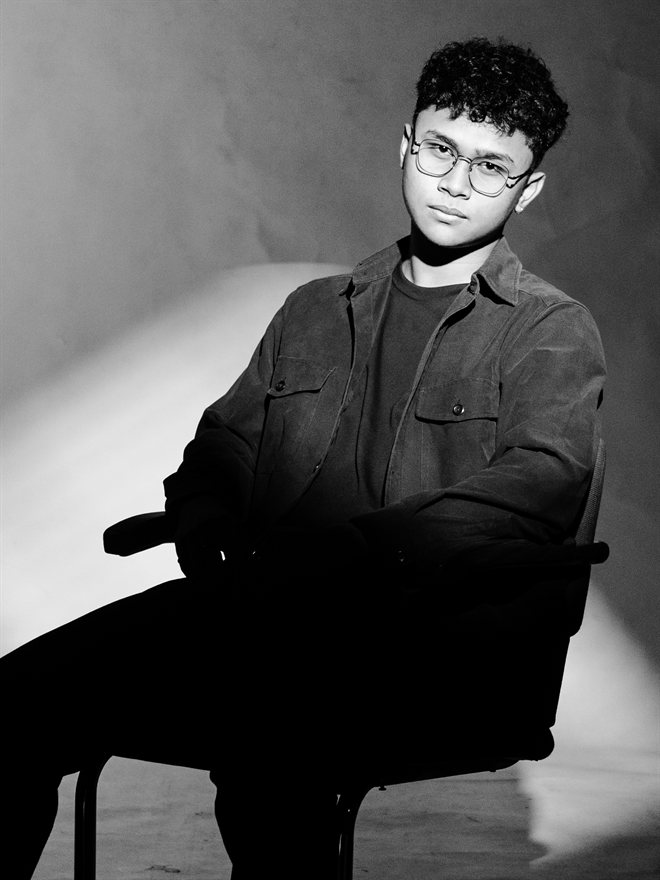

AI Safety Researcher
Ivan Yuri De Leon
Currently
- Independent AI Safety Researcher
- Career Accelerator Head at Safe AI Philippines
- AI Forward Deployed Engineer at Globe Telecom
Previously
- Master of Data Science at Ateneo de Manila University
- Visiting Researcher at Gigascale Laboratories
- Research Intern at the Nara Institute of Science and Technology
- AI Safety Training at BlueDot, TARA, & AI Safety Diliman
Summary
My name is Ivan Yuri De Leon. But most people call me Lion. I hold a Master’s degree in Data Science from Ateneo de Manila University and have a background in Applied Mathematics and Economics. I have built datasets for the Filipino language and evaluated AI on Filipino-language tasks. I am now moving toward AI alignment and interpretability research, with an interest in consumer-facing risks and long-term interactions between AI systems.
On weekdays, I work as an AI engineer at Globe. On weekends, I head programs at Safe AI Philippines. In the evenings, I do independent technical AI safety research. And when I still can’t sleep, I fit in some creative writing (toggle the switch above to meet my alter ego). I advocate for AI safety and Filipino intellectualization in the development of emerging technologies.

